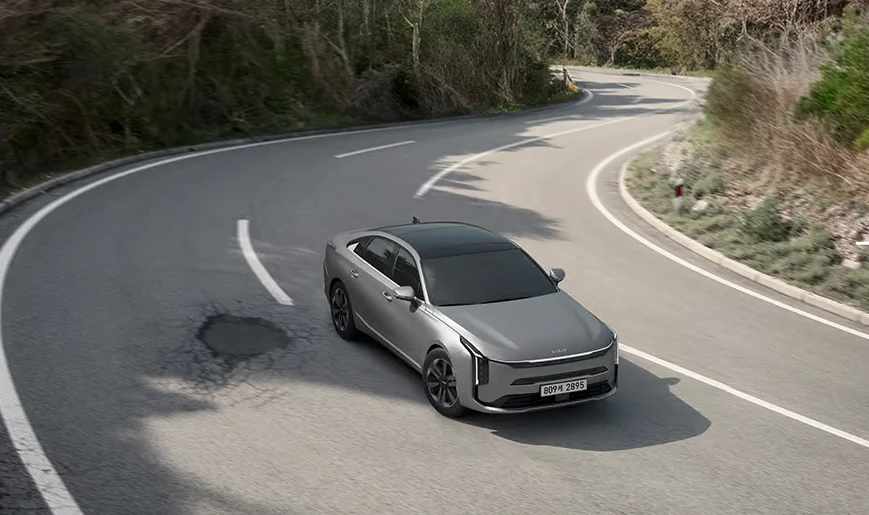
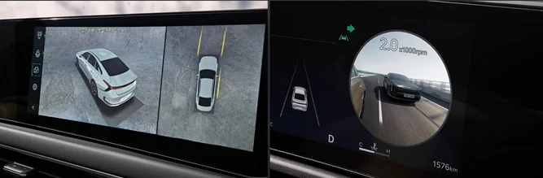

▲ 스타맵 시그니처 라이팅을 적용한 기아 더 뉴 K8 전측면
기아의 준대형 세단 K8이 27년형으로 트림 구성과 가격을 새로 정비하며 시장에 나왔습니다. 그랜저와 함께 국내 준대형 세단 시장을 양분해온 K8은 이번에도 스포티한 디자인과 다양한 파워트레인 선택지를 앞세우고 있습니다. 국내외 매체의 시승기와 실사용 후기를 모아 어떤 차인지 정리했습니다.
1. 무엇이 달라졌나 — 스타맵 라이팅과 커진 차체

▲ 12.3인치 계기반과 인포테인먼트를 통합한 파노라믹 커브드 디스플레이
외관에서 가장 눈에 띄는 변화는 대형 전기 SUV EV9에서 먼저 호평받았던 '스타맵 시그니처 라이팅'을 K8에 가져왔다는 점입니다. 가늘고 입체적인 주간주행등이 전면 인상을 한층 또렷하게 만들었고, 전장도 기존보다 35mm 늘어나 준대형다운 비례감을 강화했습니다. 실내에는 12.3인치 계기반과 12.3인치 인포테인먼트를 하나로 통합한 파노라믹 커브드 디스플레이가 자리해, 깔끔하면서도 첨단 느낌을 살렸다는 평가를 받습니다. 이중접합 차음 글라스와 액티브 로드 노이즈 컨트롤, 강화된 흡음재 등으로 정숙성도 신경 썼습니다.
2. 파워트레인 4종 — 가솔린부터 하이브리드·LPG까지
K8은 총 4가지 파워트레인으로 구성됩니다. 기본형인 2.5 가솔린은 198마력에 25.3kgf·m 토크, 복합연비 12.0km/L를 냅니다. 3.5 가솔린은 300마력, 36.6kgf·m 토크로 준대형 세단다운 여유로운 출력을 갖췄지만 복합연비는 10.6km/L로 다소 낮습니다. 1.6 터보 하이브리드는 시스템 출력 235마력(37.4kgf·m)에 복합연비 18.1km/L로 네 파워트레인 중 가장 효율적입니다. 택시·렌터카 등 영업용으로 꾸준히 선택받는 3.5 LPi는 240마력에 복합연비 8.0km/L 수준입니다.
3. 시승기로 본 승차감과 정숙성 — 하이브리드 실연비는

▲ 곡선 구간이 많은 산길에서도 안정적인 주행감을 보여준 K8
애틀랜타K의 시승기에 따르면, K8 하이브리드는 저속에서 전기모터로 조용히 출발한 뒤 고속에서 가솔린 엔진으로 부드럽게 전환돼 "계기판을 보지 않으면 EV 모드인지 엔진 모드인지 구분하기 어려울 정도"였다고 평가했습니다. 스포츠 모드에서는 운전석 시트가 몸을 잡아주는 느낌까지 더해져 안정감을 높였다고 전했습니다. 공식 복합연비는 18.1km/L지만, 이 매체가 실제로 94km 구간을 주행한 결과 17.0km/L를 기록해 공인 연비에 근접한 실용적인 수치를 보여줬습니다. 터널 진입 시 창문이 자동으로 닫히고 실내 공기 순환 모드가 켜지는 기능, 방향지시등을 켜면 후측방 영상을 계기판에 띄워주는 기능도 실사용 편의성을 높이는 요소로 꼽혔습니다.
4. 가격표와 그랜저 비교 — 어떤 트림을 골라야 할까

▲ 서라운드뷰 모니터링과 헤드업 스타일 계기판 표시 화면
27년형 K8 가격은 가솔린 2.5 노블레스 라이트가 3,731만원으로 시작해 최상위 시그니처 블랙이 4,660만원, LPi는 프레스티지 3,777만원부터 노블레스 4,161만원, 3.5 가솔린은 노블레스 라이트 2WD 4,043만원부터 시그니처 블랙 AWD 5,165만원까지 폭넓게 구성됩니다. 같은 급인 그랜저가 전통적인 고급스러움을 앞세운다면, K8은 상대적으로 젊고 스포티한 디자인 지향점으로 차별화를 시도하고 있다는 평가가 많습니다. 연비를 중시한다면 하이브리드, 주행 성능과 공간을 우선한다면 3.5 가솔린 상위 트림이 유력한 선택지로 꼽힙니다.